3/23/2014
Novice Derby at Willow Draw
I was going back and forth on entering Beginner Novice or Novice
this weekend (this farm tends to have good move up courses). I sent in my BN entry, but saw the week before that the jump
on the hill was included in BN and Novice (I miss remembered, and it ended up not
being on BN), and noticed that we'd
probably jumped
most of the jumps on the novice course so I moved us up.
We'd fox hunted the day before, which doesn't lend itself to the best dressage
the next day, and we scored a 31.3, which isn't as good as I'd have liked.
I'd been a bit nervous on the drive over thinking of jumping and feeling a bit tired,
but once I was in the jumping saddle I was ready to jump.
Miaren was listening on course like our last event and I could slow him to switch leads when
needed and
he'd balance before the fences when I asked. Also, he'd power up and engage for the jumps and combinations which made
the whole thing go rather well. It was nice to finish clean and come in first.
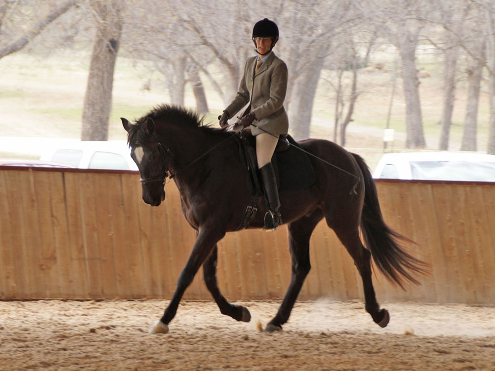
The judge said he was nicely active, but needed more balance. He had energy, but
didn't want to come through for me.
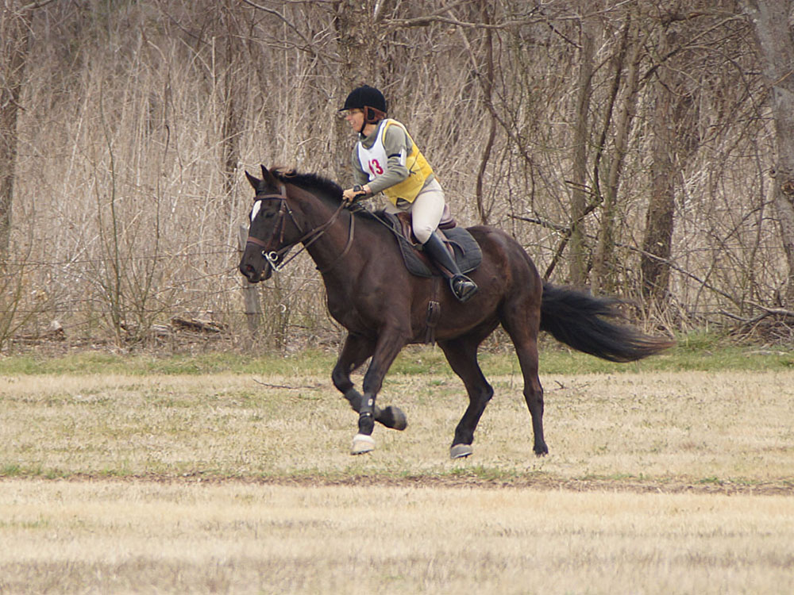
Heading to a fence in the stadium part.
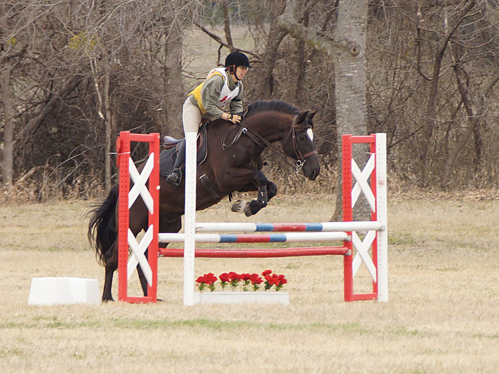
I didn't walk the course when it was set to Novice height, and all my focus was
on how we'd do cross country, so I didn't pay much attention to the stadium jumps
as we went around.
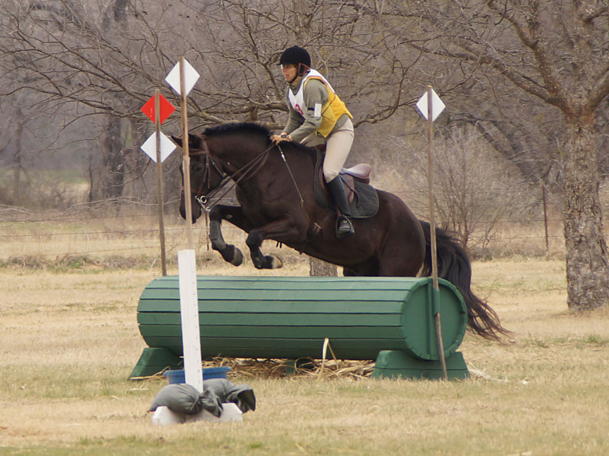
The jump before the water. He's used to this type of combination.
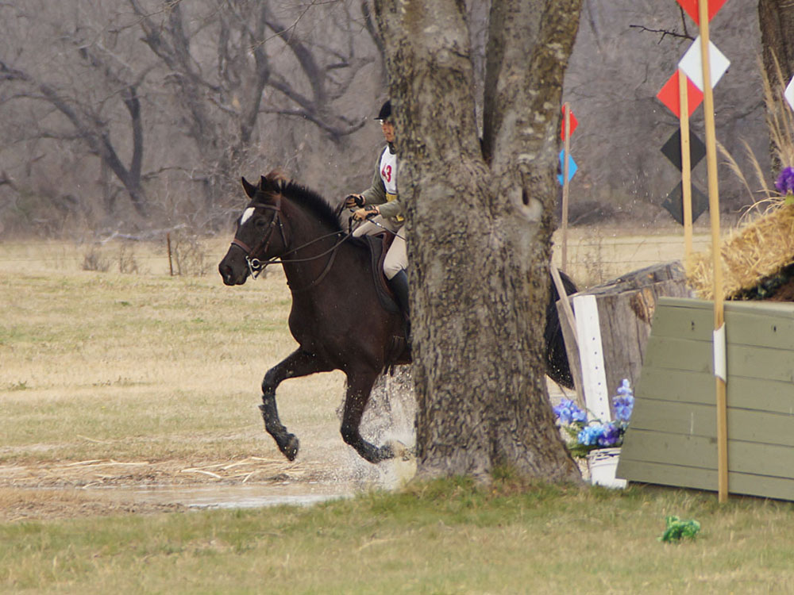
Happy through the water, but I'm starting to focus him because there was a little
bank up and down that he would have no trouble with, but that we'd never thought to navigate.
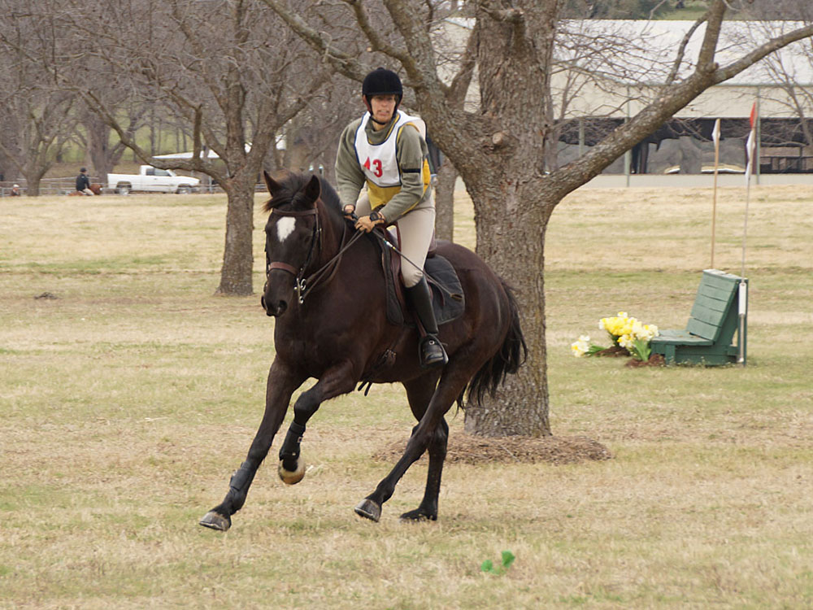
Nicely engaged heading to the coffin complex.
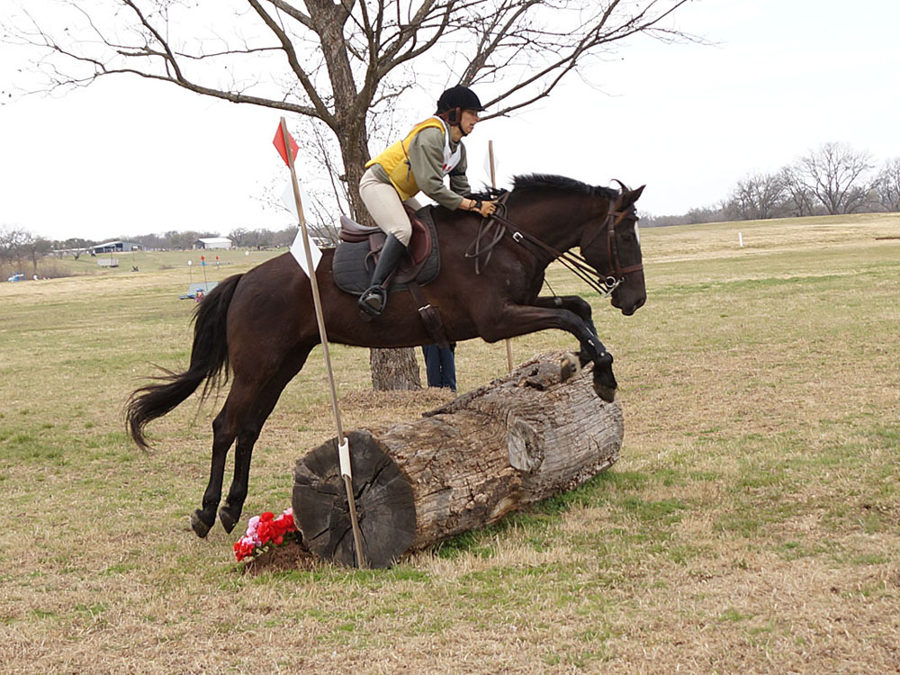
He got good spots to the 3 related jumps.
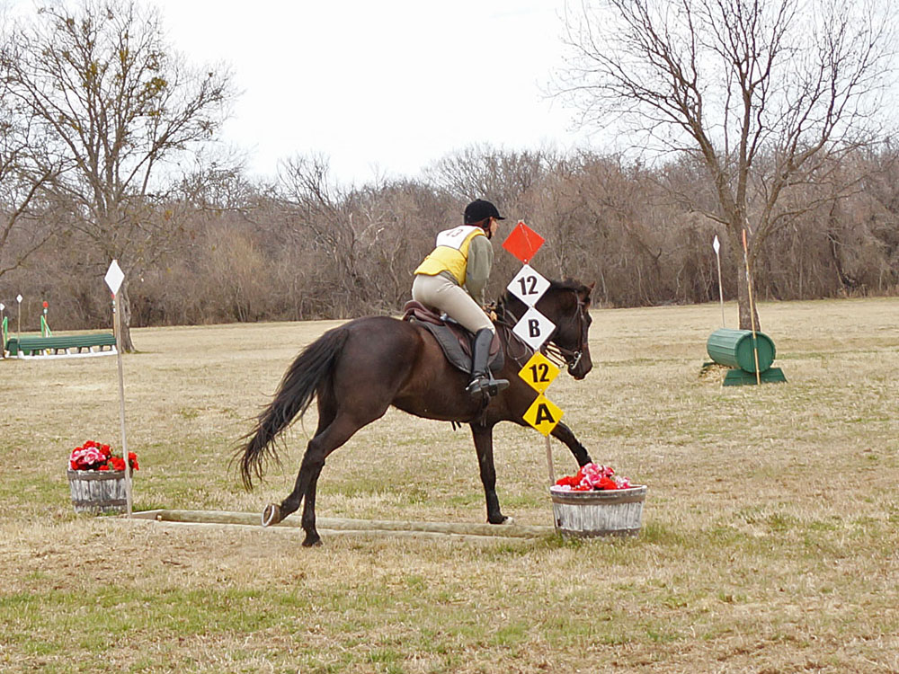
No hesitation and taking it perfectly as a part of the combination.
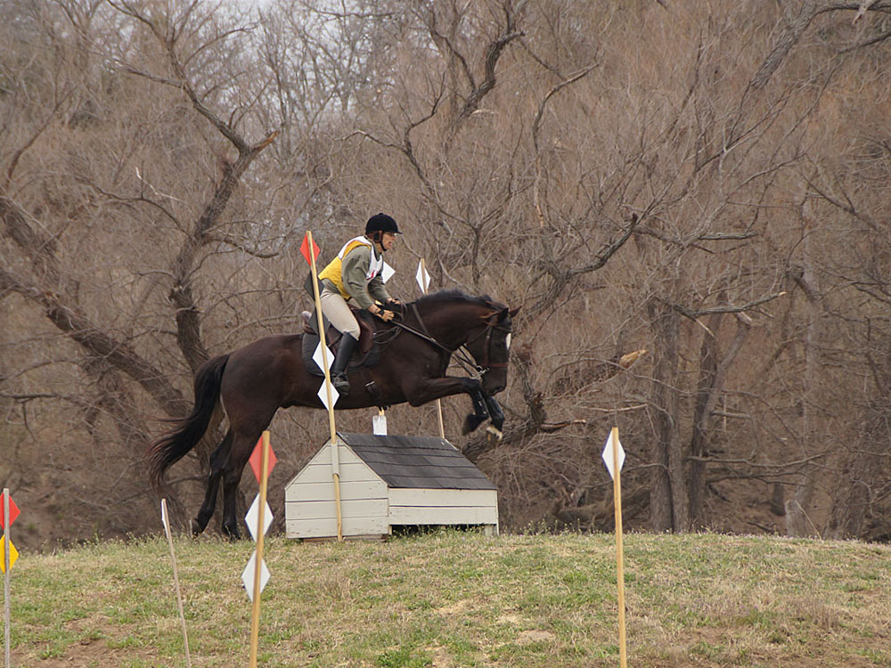
Jump on the top of a hill. There was a bench on the back side, then the climb with
this house on top and down to another jump at the bottom. It was nice to ride all
the technical elements this course had. Training level had the same elements, but
it's jump at the bottom was a bit narrower and taller. I know I've ridden other
courses that shared things with Training level, but usually it's not fun technical
stuff.
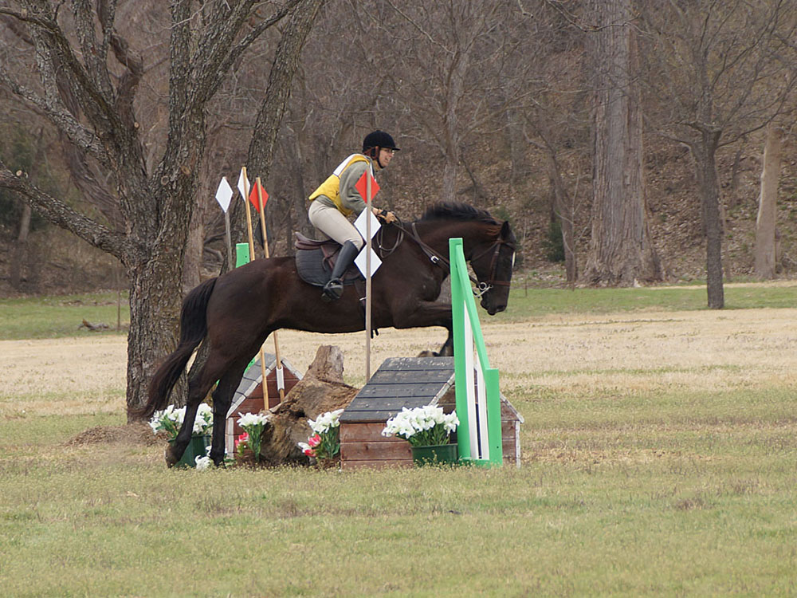
And I'm grinning because he carried us through like we jump on hilltops every day.
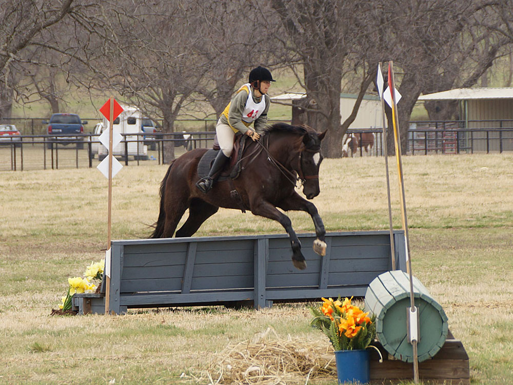
My trainer walked this combination, but never did like the striding. I wasn't concerned,
and rightly.
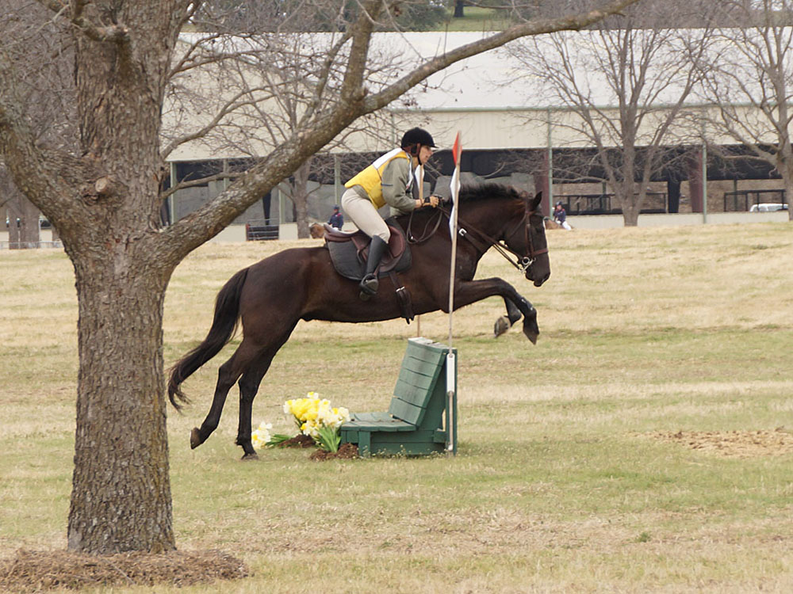
Miaren hit his striding just right with the bending line.